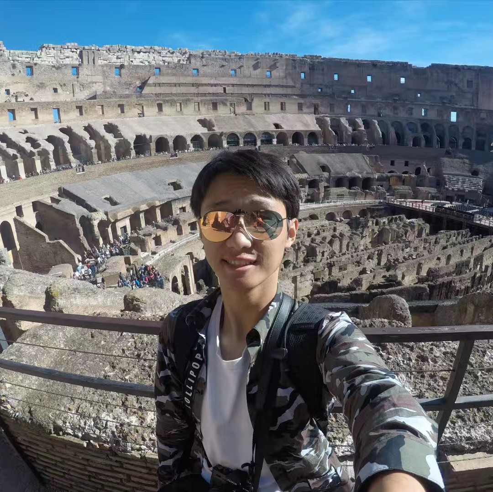
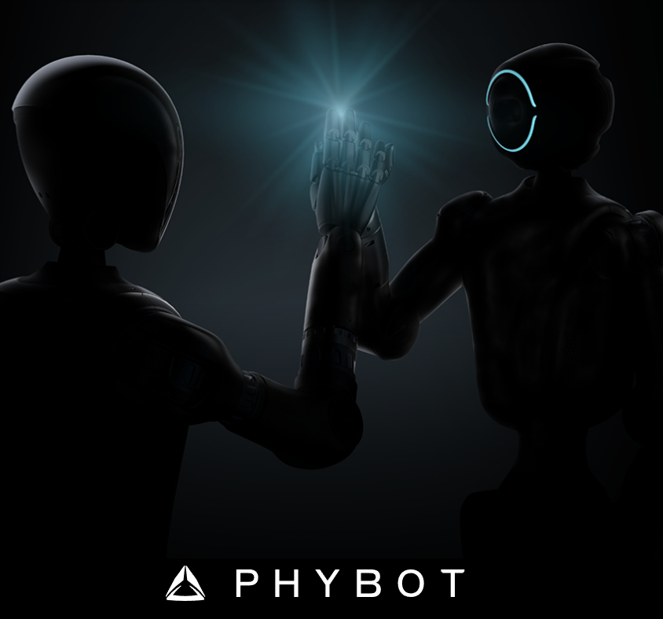
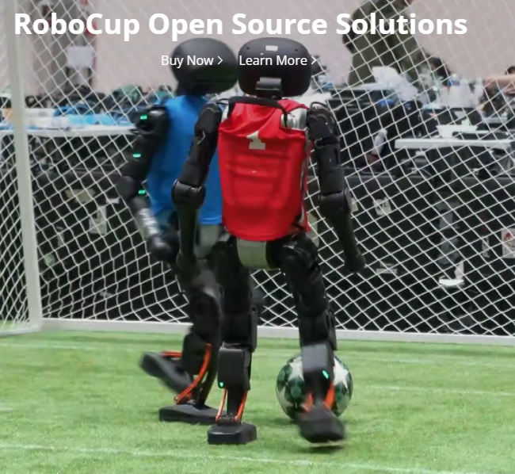

About the Workshop
Humanoid robots are rapidly advancing beyond structured environments toward dynamic, real-world athletic tasks, from agile locomotion and acrobatic maneuvers to competitive sports and physically demanding manipulation. Achieving human-level athletic performance demands tight integration of robust perception, real-time decision-making, and whole-body control under high-speed, contact-rich, and unpredictable conditions.
This workshop aims to bring together researchers across robotics, computer vision, reinforcement learning, biomechanics, and sports science to explore the frontiers of athletic humanoid intelligence. We seek to bridge the gap between perception systems that must operate at the speed and precision required for athletic tasks, and decision-making frameworks that can plan and adapt under physical and temporal constraints.
By convening researchers from diverse backgrounds, including vision, deep learning, optimal control, biomechanics, and AI for sports, the workshop seeks to identify open challenges, foster cross-disciplinary collaboration, and chart a roadmap for the next generation of athletic humanoid robots.
Speakers
Confirmed Speakers

Humanoid robots offer two unique advantages for general-purpose embodied intelligence. First, they are inherently generalist platforms, capable of performing a wide range of tasks in complex, human-centric environments. Second, the close embodiment alignment between humans and humanoids enables the transfer of skills from human data to robotic control.
However, unlike direct teleoperation, learning from off-embodiment human data introduces non-trivial cross-embodiment gaps, particularly at the level of dynamics and actuation. In this talk, we present a general recipe for learning humanoid skills from human data with physics grounding. Human data provides high-level intent and skill structure, while a physics-grounded layer translates them into motor-level actions. This approach enables versatile, adaptive, and robust skill learning across a range of loco-manipulation and dexterous manipulation tasks.


Professor
Johannes Kepler University Linz & University of Alberta
Learning skills on physical robots to solve tasks at human-level performance is a key enabling technology that can revolutionize everyone's lives. Much of today’s research focuses on developing learning algorithms, while designing the robotic body used for execution is often treated as a separate problem. Biological systems, and especially the human anatomy, show that generalization and high performance in difficult tasks are facilitated by the body itself. In this talk, I will illustrate what we have learned over the past years about how we can build robots to run learning algorithms more efficiently and safely.

Research Scientist
Beijing Phybot Technology Co., Ltd
Humanoid robots have achieved impressive capabilities in locomotion and manipulation, yet fast and precise interaction with moving objects remains a major challenge. In this talk, I will present a reinforcement-learning framework for humanoid badminton that learns a unified whole-body policy for footwork, stroke, and targeted shuttle placement. To improve both motion quality and task adaptability, multiple region-specific adversarial motion prior discriminators guide the robot toward different human-inspired striking styles across its reachable workspace. The desired return location is incorporated directly into policy training, allowing the controller to jointly determine how to move, where to strike, which stroke to execute, and where to return the shuttle, without relying on an upper-level planner.
I will also introduce an annealed curriculum that initially uses locomotion-related subtasks to reduce the exploration difficulty of whole-body learning. These auxiliary objectives are gradually annealed away as training progresses, reducing gradient conflicts between locomotion and striking. In addition, I will discuss a prediction-free variant that achieves competitive performance without explicit shuttlecock trajectory prediction, highlighting the potential for more reactive and streamlined dynamic interaction systems. The resulting policy is evaluated in simulation and on a real humanoid, demonstrating dynamic and coordinated whole-body badminton performance.
Organizers

Jiashun WangCarnegie Mellon University, Robotics Institute
jiashunw@andrew.cmu.edu
Website
Call for Papers
Topics include, but are not limited to:
- Perception for fast and dynamic humanoid behaviors
- Real-time decision making for athletic humanoid robots
- Reinforcement learning for sports and agile locomotion
- Whole-body control under contact-rich and high-speed conditions
- Vision-based policy learning for athletic skills
- Humanoid robots in racket sports, football, badminton, and related tasks
- Biomechanics and human movement inspiration for humanoid intelligence
- Sim-to-real transfer for athletic humanoid systems
- Embodied AI for reactive and physically grounded decision making
- Benchmarking, evaluation, and open challenges in athletic humanoid robotics
Live Demo Companies

Beijing Phybot TechnologyDemo: Humanoid Badminton

Booster RoboticsDemo: Dancing / Football
Program Schedule
| Time | Event |
|---|---|
| 8:30 - 8:40 | Opening remarks and workshop overview |
| 8:40 - 9:10 | Invited speaker: Mingguo Zhao from Tsinghua University |
| 9:10 - 9:40 | Invited speaker: Guanya Shi from CMU |
| 9:40 - 10:10 | Invited speaker: Peter Stone from Sony AI |
| 10:10 - 10:40 | Invited speaker: Chenhao Liu from Phybot |
| 10:40 - 11:10 | Coffee break + Poster session |
| 11:10 - 11:40 | Invited speaker: Karthik Ramani from Purdue University |
| 11:40 - 12:10 | Demo session by Phybot and Booster |
| 12:10 - 13:30 | Lunch break |
| 13:30 - 14:00 | Invited speaker: Dieter Büchler from Johannes Kepler University |
| 14:00 - 14:30 | Invited speaker: Aude Billard from EPFL |
| 14:30 - 15:00 | Invited speaker: Vikash Kumar from MyoLab AI |
| 15:00 - 15:30 | Poster lightening talk |
| 15:30 - 16:00 | Coffee break + Poster session |
| 16:00 - 17:00 | Panel discussion: Open problems in athletic humanoid robotics |
| 17:00 - 17:20 | Closing remarks and announcement of best poster award |
Contact
For logistics questions, please contact I-Chia Chang at chang970@purdue.edu.
For workshop paper submissions, please contact Wenxi Chen at chen4803@purdue.edu.